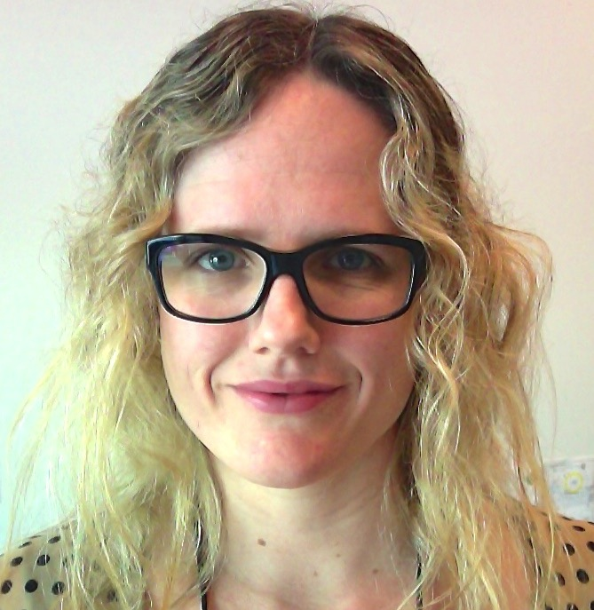

Kristin Anne Camarena

(805) 296-0941
Kristin.Camarena@gmail.com
908 36th Ave, Oakland, CA 94601
Specialties
Operations Management | Financial Management | Quantitative Analysis | Facilities Management | Project Management | Laboratory & Office Fit-Up | Move Planning & Execution | Safety Programs | Strong Leadership | Procurement | Incentive Alignment | Human Resources | Information Technologies | Negotiations | Strategic & Tactical Planning | Process Development & Improvement | Technical Writing | Laboratory Management | Manufacturing Management | R&D
Education
UC Berkeley Extension
Certificate Program in Software Development & Programming
January 2017-June 2018 (expected completion)
University of California at Davis, Graduate School of Management
Master of Business Administration with emphasis in Finance & Analytical Marketing
Beta Gamma Sigma Membership (graduated in top 20% of business school class)
September 2009-June 2012
University of California at Santa Cruz
Bachelor of Arts in Molecular, Cellular, & Developmental Biology
Graduated with Honors in Major
September 1998-June 2002
Professional Experience
Lawrence Berkeley National Laboratory, 2012-current (5 years)
Operations Manager/Program Manager 3, January 2012-current
Oversee Operations for the Joint Center for Artificial Photosynthesis at the Berkeley, CA site.
Supervise (direct and matrix) a staff of operations professionals for budget preparation/financial reporting (up to $10.5M/year), facility management, event planning, travel, procurement, safety compliance, IT, and HR.
Serve as a liaison between LBL Operations and the approximately 100 JCAP researchers consisting of Faculty/PIs, postdoctoral scholars, UCB graduate students, and technical staff from a diverse set of disciplines including chemistry, material science, physics, and engineering.
Managed the fit-up and move planning to relocate the JCAP project (which includes $10M in equipment) from South Berkeley to Chu Hall, a $59M UCB building at the LBL campus, in April 2015.
Progentech/GenturaDX (acquired by Luminex in 2012), 2008-2011 (4 years)
Pilot Manufacturing Manager, April 2010-April 2011
Supervised 6 manufacturing employees in the production of a proprietary integrated purification and PCR molecular diagnostic cassette for research and commercial development.
Forecasted raw material needs, allocated resources, authored SOPs, implemented procedures, planned production, created bill of materials, and managed schedules for pilot manufacturing plant.
Oversaw the execution of study plans for product stability, verification, robustness, and trouble-shooting.
R&D Laboratory Manager, June 2008-April 2011
Designed and executed experiments for proprietary cassette as part of R&D group.
Space planning and move coordination to relocate GenturaDX from Emeryville, CA to Hayward, CA.
Created and maintained an Access database in lieu of a formal ERP system to track order information for capital purchases, routine expenses, and inventory of materials.
Santa Cruz Biotechnology, 2002-2008 (5 years)
siRNA Synthesis Lab Manager, February 2008-June 2008
Managed a group of 5-7 researchers in automated synthesis of approximately 1,000 synthetic RNA molecules per week in a sterile, RNase free environment.
Peptide Sequence Design Group Manager, May 2006-June 2008
Managed a group of 3-4 research designers that created unique peptide sequences using NCBI databases and proprietary company criteria.
Peptide Synthesis Lab Manager, March 2003-June 2008
Managed a group of 8-10 researchers in the process of automated synthesis, purification, and analysis of over 17,000 peptides annually in a seven day per week operation.
Worked closely with the purchasing department to evaluate vendors, provided an annual forecast for raw material needs, and controlled the inventory for the two high-production laboratories under my management.
Oversaw the design and successful synthesis of peptides representing all protein-encoding genes of human Chromosome 21.
Designed FileMaker Pro databases, reduced hazardous waste production, and optimized processes that created a yearly operating savings of $250K.
Key founding member of the company Google Search Engine Optimization team.
Assisted with space planning and move coordination to relocate the Peptide Synthesis Lab and siRNA Synthesis Lab from Santa Cruz, CA to Paso Robles.
Peptide Antibody Production Research Assistant, December 2002-March 2003
Purified, analyzed, and packaged resesearch antibodies derived from goat and rabbit sera.